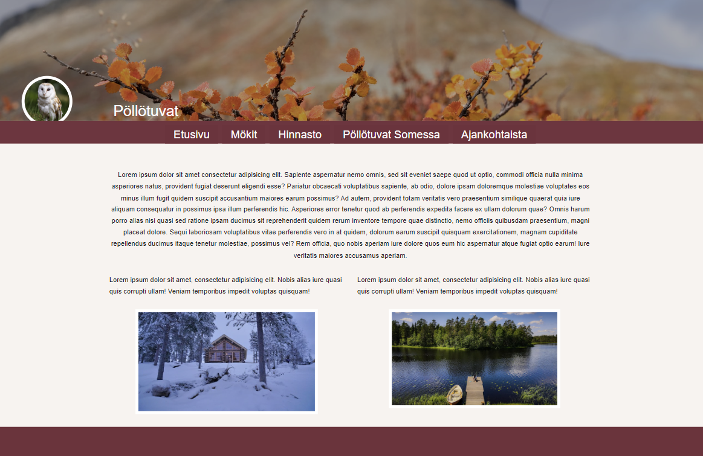

Tarkempien tietojen sivun yläosa. Perussivu on joka mökille sama, mutta mökkikohtaiset tiedot haetaan tietokannasta.
Opiskelujen aikana on päässyt kokeilemaan monenlaista. Tämä Pöllötuvat projekti syntyi ensimmäisenä opiskeluvuotena Web-kehitys moduulin aikana ryhmätyönä. Ryhmässä oli lisäkseni kaksi opiskelijaa toteuttamassa tätä kuvitteellista mökkien vuokraussivustoa.Projekti alkoi ulkonäön suunnittelemisella Figmassa. Jokainen tiiminjäsen teki oman ehdotuksensa ulkonäöstä, ja käyttöön valikoitui yhteisellä päätöksellä tekemäni malli. Suunnitelman pohjalta tehtiin kaksi erilaista toteutusta. Molempien toteutusten tuli olla ulkonäöltään Figmalla tehdyn suunnitelman mukaisia. Ensimmäinen toteutus tehtiin hyödyntämällä WordPressiä. Toteutuksen aikana opeteltiin hyödyntämään erilaisia Plugineja, sekä muokkamaan valmiita teemoja. Toisena toteutustyylinä syntyi sivusto HTML-koodia ja CSS:ää käyttäen. Muotoilupuolella kokeilimme BootStrappia, joka paljastui näppäräksi hyvän skaalautuvuutensa ansiosta.
Minun päävastuullani projektissa oli ylänavigointipalkin toteutus sekä mökkien esittelysivun luominen, joista on otos yllä. Mökin kuvasta pääsee sivulla tarkemmin katsomaan mökin tietoja.
Tarkempien tietojen sivun yläosa. Perussivu on joka mökille sama, mutta mökkikohtaiset tiedot haetaan tietokannasta.
Sivun alaosa, jossa pyörii vaihtelevia lisäkuvia mökistä.
Minulle sovittuihin tehtäviin kuului myös toteuttaa lomake, jolla käyttäjä voi lisätä uuden mökin vuokrattavaksi. Lomakkeen tiedot tallentuvat tietokantaan.
Kirjautuneelle käyttäjälle loin päivitysnäkymän, jossa mökin tiedot haetaan esitäytettynä lomakkeelle tietokannasta, joten ne on helposti tarkastettavissa ja päivitettävissä..
Projektin aikana keskityttiin myös miettimään sivustojen saavutettavuuta. Toteutuksessa harjoiteltiin myöskin eri näyttökokojen huomioonottamista. Ohessa olevassa kuvassa näkyy kuinka ylänavigointipalkki muuttuu pienemmässä koossa hampurilaisvalikoksi ja mökin perustiedoista kertovat pikkukuvakkeet jakaantuvat omille riveilleen mentäessä kapeampiin näyttökokoihin.